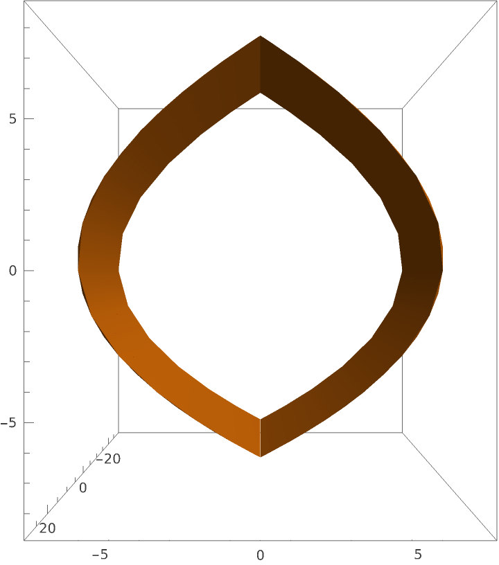
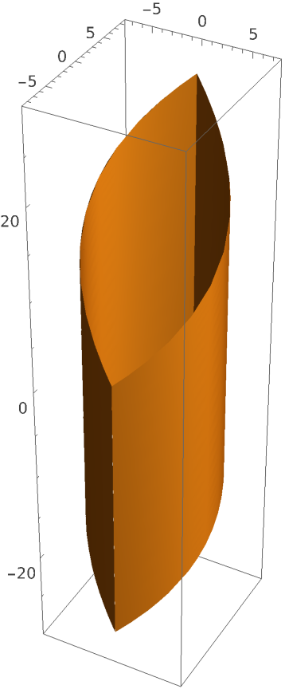

Pasta by Design - Shapes That Don't Work and Why
Introduction
Flipping through Pasta by Design by George L. Legendre, you see mathematical and visual explorations of distinct pasta shapes. These shapes are grouped into a “family tree," connected through shared geometric and design properties. In this regard, pasta is treated as a set of transformations of surfaces and curves.
However, the idea of a geometric “family tree” can be misleading. While the equations suggest that you can endlessly create pasta shapes, many of them do not work in the real world. Some shapes are too fragile, cook unevenly, or do not hold sauce well. This blog post focuses on these physical failures, examining what goes wrong when trying to design pasta mathematically and why most shapes do not work.
How Pasta Shapes Are Modeled
Geometrically, most pasta shapes start with a base form that is then transformed through simple operations. A flat strip, a cylinder, or a strand can be widened, narrowed, curved, or twisted to create a wide range of pastas. Many of these shapes differ in basic changes, such as thickness, curvature, or degree of twist, as opposed to fundamental structure.
There are several key geometric components at the root of this system.
- Curves: Define the path that a shape takes through space, which can be straight, bent, or spiraled.
- Cross-sections: Describe the shape we see when we cut a pasta in half, such as a circle, ellipse, or rectangle.
- Surfaces: Form the outer layer and may be smooth or ridged. For example, wave-like grooves can be modeled by sine or cosine functions.
- Transformations: Simple operations, such as twisting, folding, or bending, that generate variety.
Basic shapes come from these components. A flat strip, like fettuccine, is a rectangular cross-section extruded along a straight path, with variations introduced by, for example, adjusting the width. A cylindrical form, such as penne, is a circular extrusion that can be hollowed into a tube, cut at angles, or ridged on its outer layer. A strand, like capellini, is simply a very thin cylinder that can be modified in thickness or curvature to produce new variations.
These forms can be understood as part of a family tree, where many pasta shapes are variations of one another. A strip can be folded or pinched to create bow-shaped forms, and a tube can be curved and shortened to create elbows. With new forms coming from changes to existing ones, pasta shapes seem to occupy a continuous design space.
Nevertheless, geometric generation alone does not ensure a successful pasta design. A slight reduction in thickness or an added twist can turn a stable shape into one that collapses under heat, cooks unevenly, or does not hold sauce well. Ultimately, pasta design must survive cooking and remain functional.
How Pasta Shapes Function
For a design to be successful, it must meet several physical and practical requirements. In particular, pasta needs to cook evenly, hold sauce effectively, and be easy to eat.
Requirement #1: Cooks evenly. This depends largely on thickness and the surface-area-to-volume ratio. Thin pasta, such as spaghetti, cooks quickly because it has a high surface area relative to its volume, allowing heat to diffuse rapidly. Thicker shapes, such as penne or rigatoni, take longer to cook because heat must travel farther to reach the center. Uniform thickness is also important in even cooking. If one part of a shape is thicker than another, it will cook more slowly, resulting in uneven texture.
Requirement #2: Holds sauce effectively. Different shapes maximize surface area and form spaces where sauce can cling. For example, fusilli uses a helical form to trap sauce in its grooves, while farfalle uses folds to catch thicker sauces. Even small surface changes, such as ridges on rigatoni, increase friction and help sauce stick better. So, curvature and surface texture directly affect how much flavor each bite carries.
Requirement #3: Easy to eat. Long strands, like spaghetti, are flexible and can be twirled, making them a good choice for smoother sauces. Shorter, curved shapes, like macaroni, are easier to scoop up and eat in one bite. The overall structure of a shape, including whether it forms tubes, spirals, or folds, determines how it can be handled with a fork or spoon.
These functional requirements demonstrate that pasta design is not purely geometric. Although continuous variation can generate new shapes, each design must also solve practical problems.
Examining Existing Pasta
Flat pasta shapes are generally structurally reliable due to their simple geometry and consistent thickness. This uniformity promotes even cooking. However, their smooth surfaces offer limited opportunities for sauce adhesion, reducing their effectiveness in holding sauce. While their simplicity strengthens their reliability, it also restricts their functional versatility in comparison to more complex designs.
More complex pasta shapes, such as farfalle and rotelle, incorporate folds, edges, and varied surfaces. These features create pockets that can hold sauce more effectively and generally improve adhesion. At the same time, their added complexity can result in uneven cooking, and sharp folds may serve as structural weak points.
A noteworthy comparison is pennoni lisci versus pennoni rigate. These two pastas share the same tubular shape but differ in surface texture: one is smooth, the other ridged. This example manifests how even small geometric modifications, such as altering surface texture, can significantly influence how pasta interacts with sauce, despite identical overall shape.
Creating Pasta Designs


To develop new pasta shapes, geometric transformations can be applied to existing forms to evaluate their impact on performance. To illustrate, I started with a familiar shape, penne, and enlarged the center. This resulted in a form resembling pennoni, just with thinner walls and a larger internal cavity.
Comparing my modification to pennoni underscored why mine would fail. Traditional pennoni has thick, uniform walls that maintain its cylindrical shape during cooking. This thickness provides rigidity to resist bending and allows the pasta to soften evenly without collapsing. My modified design weakens the structure because of the reduced thickness and enlarged internal cavity. Although both shapes share similar geometry, my minor alteration significantly alters the pasta's structural integrity.
This comparison further exhibits that successful pasta design relies not just on overall shape, but also on how material is distributed throughout the shape. Pennoni is successful because its thickness is balanced to support both structural integrity and cooking performance. My version disrupts that balance, demonstrating yet another minor geometric change that can lead to failure.
Conclusion
In theory, geometry allows for endless variation. Curves can be stretched, twisted, folded, and recombined in nearly infinite ways. Yet in practice, this freedom is constrained by physical laws.
Pasta needs to withstand boiling, maintain structural integrity, and interact effectively with the sauce. These requirements limit which shapes are successful and which are not. Designs that ignore constraints as such tend to fail due to breakage, uneven cooking, or poor functionality.
Familiar pasta shapes are not solely aesthetic; they represent the result of repeated refinement, with each successful design balancing structure, function, and practicality.